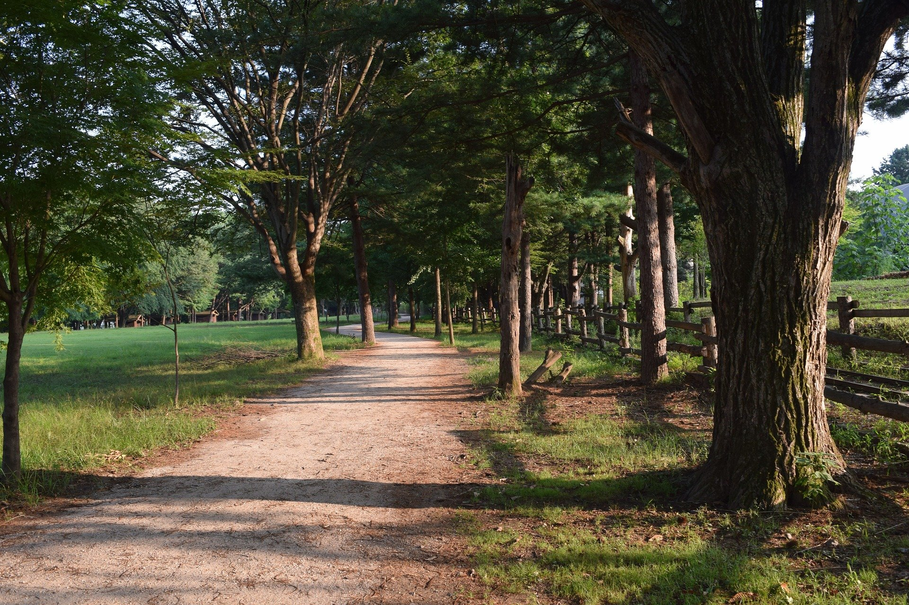

떠나고 싶을 때 떠나 자
떠나 자
Twitter
Facebook
Instagram
춘천 - 남이섬

남이섬 들어가는 방법은 2가지가 있다. 가평에서 배를 타고 들어가는 방법과 짚라인을 타고 섬으로
이동하는 방법이 있다. 고소공포증과 스릴 있는 걸 좋아한다면 짚라인 한번 타보길 바란다.
남이섬 제일 유명한 포토존은 역시 겨울연가에도 나온 메타세콰이어길 그 외에도 여러 가지
둘러볼 곳이 많으니 한번 가보자.
Menu
메인 홈
경치좋은 여행지
제주도 섭지코지
춘천 - 남이섬
가장 아름다운 성당
걷기좋은 여행지
강원도 - 원대리 자작나무숲
가평 - 축령산 잣향기푸른숲
제주 올레길